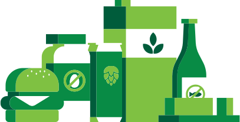

What we do:
Plant Based Specialty Foods
ポートランドベースの Earthly Gourmet Foodsとの連携で商品、サービス、情報を提供します
Based in Portland, Oregon, Earthly Gourmet provides products, services, and information.
レストラン、バー、カフェ、宿泊施設、フードトラック、中食デリバリーに対応するメニュー提案と商品提供
Our customers include restaurants, bars, cafes, hotels, and food carts. We can help with menu development.
国内外の高品質の商品を幅広くお届けし、ヴィーガンオプションのメニュー作りや、スポット需要向けのメニューに対応
We offer a wide and accommodating range of products so you can easily add vegan options to your menu and meet customer needs.
国内外のクラフトビールも一緒にお届けし、より楽しいシーンを演出いたします
In addition to vegan products we also provide craft beer to help create an enjoyable atmosphere.